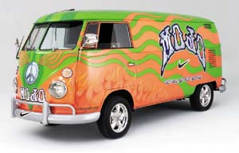
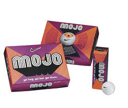
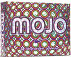
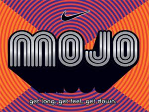
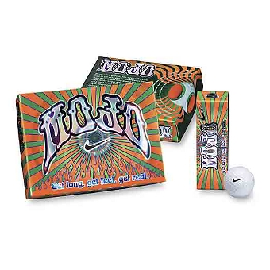

The Original Mojo
Even before the November 1, 2003 shipping date, Nike Golf had its Mojo working with the golf balls of the same name. So much, that the company upped its prerelease sales forecast by 60 percent over the original forecast according to Stan Grissinger, Category Business Director for Golf Balls at Nike Golf.
The psychedelically packaged Mojo ball was touted as Nike Golf's next generation distance ball and the rocketing sales of the mid-priced ball amazed even the Nike execs.

2005 Evolution
Introduced for the 2005 golf season, the new Mojos came in a new box and included a couple of significant changes: the pearlescent covers and the addition of the Red Magma, Purple Passion, and Tangerine Dream Karma balls.

Shipped in late September 2005, just in time for the holidays, came yet another Mojo change. This box has highly reflective silver accents and the 12th Karma ball — also silver. The Nike Rep said it was supposed to remind you of one of those mirrored disco balls.

Mojo Specs
- Cover: Super freaky pearlescent surlyn
- Core: Low compression madness (mid '70s compression)
- Dimples: 432 identical facets of harmonic turbulence for high, straight ball flight
The Mojo Story
The original Mojo was the fastest selling golf ball launched in Nike Golf history, capturing 2.1 percent market share within 60 days of launch.
The next generation Mojo brought pearlescent covers and the addition of Karma balls. Karma balls came in Red, Orange, Purple, and later Silver. As of 2007, Nike chose to discontinue the Mojo colored golf balls.

